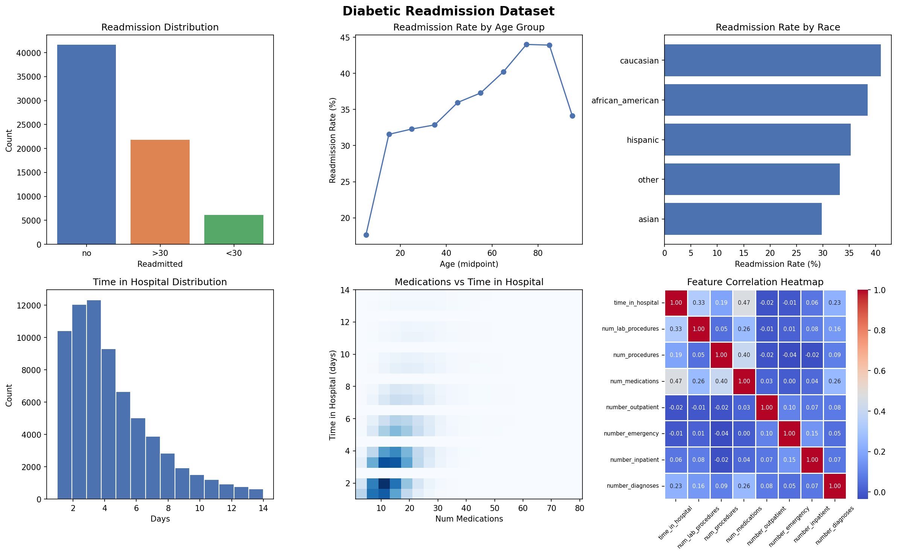

Diabetic Patient Readmission Analysis
Exploratory data analysis and visualization of 69,570 hospital records to uncover patterns in diabetic patient readmissions — using Python, Pandas, and AWS SageMaker.
Project Overview
Hospital readmissions are a major cost driver in healthcare — and for diabetic patients, they're especially common. This project analyzes a real-world dataset of 69,570 diabetic patient encounters to identify which factors are most associated with readmission, and to build a foundation for predictive modeling.
The full pipeline spans raw data exploration, feature engineering with AWS SageMaker Data Wrangler, automated model training with SageMaker Autopilot, and batch inference — all tied together with custom Python visualizations.
Dataset at a Glance
Readmission Breakdown
Key Findings
Age is a strong predictor
Over 65% of patients were aged 65–85. Readmission rates climb steadily with age, peaking in the 75–85 bracket.
Medication changes matter
45% of patients had their medication changed during the visit. 75% were on diabetes medication — both are correlated with readmission risk.
Testing gaps are significant
82% of patients had no HbA1c test recorded, and 95% had no blood glucose serum test — despite being diabetic patients.
Prior admissions are telling
Number of prior inpatient visits is positively correlated with readmission — patients with a history of hospitalization are more likely to return.
Tools & Pipeline
-
1
Data ExplorationLoaded and profiled 69,570 records with Pandas. Identified class imbalance, missing test data, and key demographic distributions.
-
2
Feature Engineering — AWS SageMaker Data WranglerApplied transformations, handled categorical encoding, and exported a clean feature set to S3 via a SageMaker Processing Job.
-
3
AutoML — AWS SageMaker AutopilotRan automated model selection and hyperparameter tuning. Autopilot generated candidate models and a full data exploration notebook.
-
4
Inference & VisualizationRan batch inference on unlabeled data with prediction probabilities. Built a 6-panel visualization dashboard with Matplotlib and Seaborn.
Visualization Dashboard
Generated with Python (Matplotlib + Seaborn) — 6 charts covering readmission distribution, age trends, race breakdown, hospital stay length, medication density, and feature correlations.

Interested in this project?
Let's connect on LinkedIn or check out more of my work on GitHub.